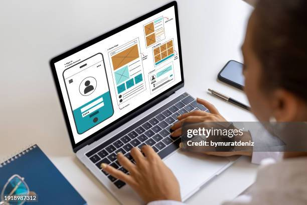
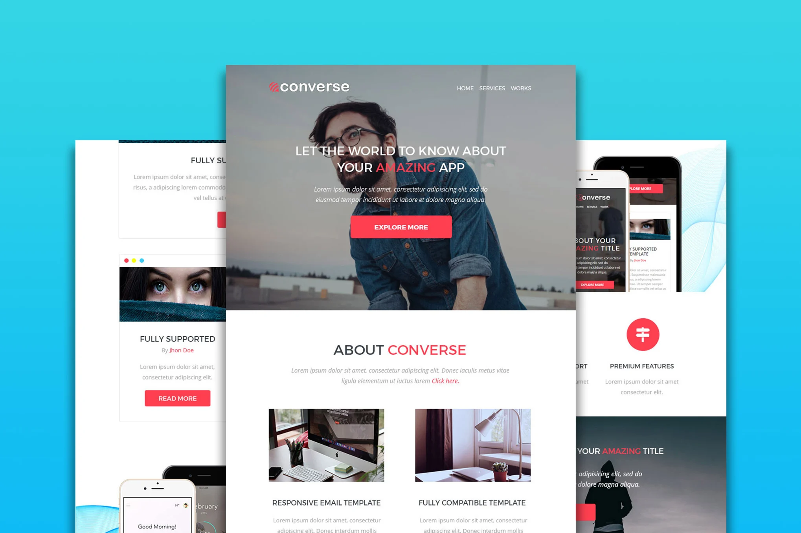
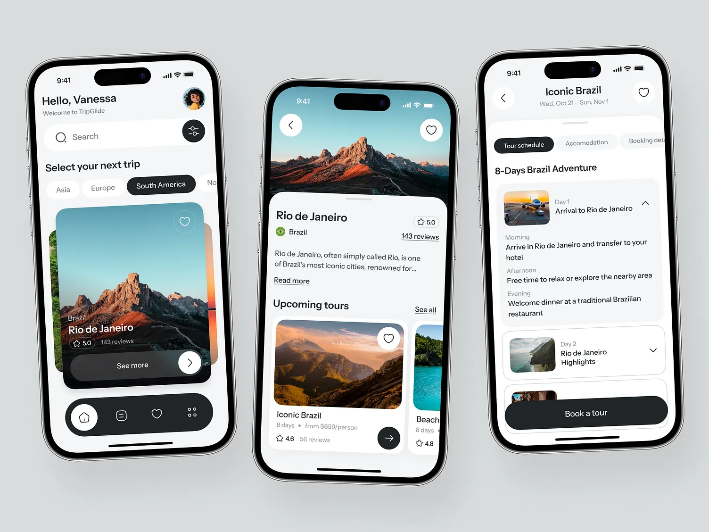

Suggested Day Plan
| Time | Activity |
|---|---|
| 08:00 | Breakfast with a hilltop city view |
| 11:00 | Gallery and market exploration |
| 15:00 | Creative district walk and coffee stop |
| 18:30 | Sunset photography and dinner |
W3Schools Parallax Clone
This single-page website recreates the parallax scrolling layout while showcasing Kigali as a calm, modern, and inspiring destination.
Start ExploringAbout The Experience
The layout follows the same single-page rhythm as the W3Schools template: immersive parallax image panels separated by readable content sections. The goal is visual precision, smooth scrolling, and strong semantic structure.
Kigali was chosen as the theme because it blends clean urban design, creative energy, and scenic views. The page is also fully responsive, so the design adapts well from large screens down to mobile phones.
Gallery
These featured images act like a mini portfolio and reflect the same image-focused layout used in the original template. Each card includes a short caption to keep the section meaningful and accessible.



| Time | Activity |
|---|---|
| 08:00 | Breakfast with a hilltop city view |
| 11:00 | Gallery and market exploration |
| 15:00 | Creative district walk and coffee stop |
| 18:30 | Sunset photography and dinner |
Media
This embedded project video gives the page a second multimedia element and demonstrates the assignment requirement beyond static imagery.
A short local audio file adds another HTML media element and helps round out the single-page experience.
Contact
This section keeps the original template spirit with simple contact details, a clean form, and a Google Map iframe for location context.
Kigali, Rwanda
+250 700 000 000
hello@discoverkigali.com